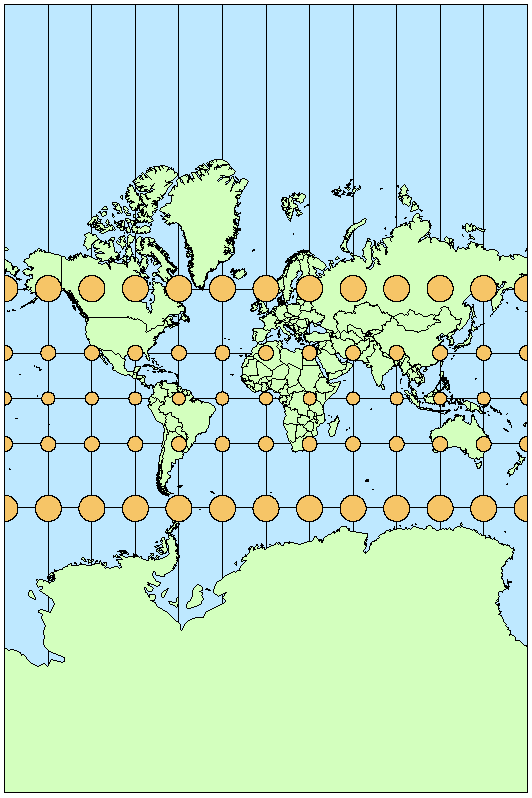
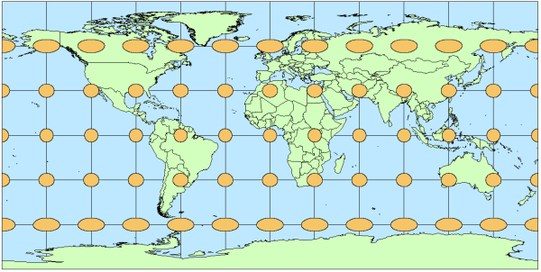
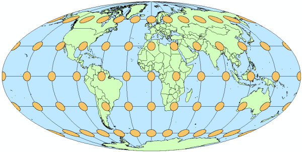

1. GIS Concepts
Data types, file formats, projections, software, and tools.
Introduction
What is GIS?
GIS = Geographic Information System
- The tool that we use to capture, store, process, analyze, and visualize spatial information.
- Helps us understand and assess patterns in spatial locations and attributes about those locations.
GISc = Geographic Information Science
- The study of geographic phenomena, spatial relationships, and patterns using computational techniques and spatial analysis tools.
- Integrates principles from geography, computer science, mathematics, and other disciplines to analyze and interpret spatial data, aiding in decision-making processes across various fields.
Why Learn GIS for Natural Resources?
Spatial Analysis: GIS enables spatial analysis techniques that help in understanding the spatial patterns and relationships within natural resource datasets. Analyzing habitat suitability, identifying biodiversity hotspots, assessing landscape connectivity, and evaluating environmental impacts.
Resource Management: GIS facilitates the management of natural resources by providing tools for inventory, monitoring, and planning. It allows for the integration of various data sources, such as satellite imagery, field surveys, and remote sensing data, to assess the condition of ecosystems, track changes over time, and develop sustainable management strategies.
Decision Support: GIS serves as a decision support tool for natural resource management by enabling stakeholders to visualize complex spatial data and model different scenarios. It helps in prioritizing conservation efforts, allocating resources efficiently, and evaluating the potential impacts of alternative management actions.
JOBS!
Spatial Data Types
What are spatial data?
How the surface of the Earth is represented digitally.
- Spatial coordinates = X, Y, sometimes Z
- Types of spatial data models (types)
- Vector
- Raster
- Networks
- LiDAR (point clouds)
- Many file formats / extensions for each
- Examples: .tiff, .shp, .gdb
Vector
Represents space as points, lines, and polygons.
- Points – single vertex
- Lines – two or more vertices
- Polygon – three or more vertices with the last vertex equal to the first

Common Vector Data Types:
More than 80 different vector file types available across software and systems!
- NetCDF
- Shapefile
- GeoJSON
- Esri Geodatabase Feature Class
- KML
Raster
Represents space as a grid of pixels or cells.

Common Raster Data Types:
- Imagine IMG
- GeoTIFF & Cloud Optimized GeoTIFF
- netCDG
- CRF (Cloud raster format)
- BAG (Bathymetric Attributed Grid)
Data Type Considerations
Raster is faster, but vector seems more correcter. - Old GIS Adage
Spatial data files do their best to represent the world. Accuracy needs will depend on each use case. Mapping an entire state vs. a single forest stand. Each sensor and GPS receiver will vary.
Raster Advantages:
- Continuous Representation: Raster data models are well-suited for representing continuous phenomena, such as elevation, temperature, and precipitation.
- Efficient Storage: Raster datasets can be more compactly stored than vector datasets, especially for large continuous areas.
- Analytical Capabilities: Raster data supports various spatial analysis techniques, such as surface analysis, proximity analysis, and interpolation, enabling detailed quantitative analysis
Raster Disadvantages:
- Loss of Detail: Raster datasets may lose detail when representing complex geometries or sharp boundaries, leading to generalization or smoothing of features.
- Large File Sizes: High-resolution raster datasets can result in large file sizes, which may require significant storage space and computing resources for processing and analysis.
- Limited Attribute Information: Raster data typically stores attribute information at the pixel level, which may limit the types of attribute analysis that can be performed
Vector Advantages:
- Precise Representation: Vector data models accurately represent discrete features with well-defined boundaries, making them suitable for representing infrastructure, boundaries, and administrative units.
- Compact Storage: Vector datasets can efficiently store attribute information associated with spatial features, enabling detailed attribute analysis and queries.
- Topology Support: Vector data models support topological relationships between features, such as connectivity and adjacency, which facilitate spatial analysis and data integrity checks.
- Flexible Editing: Vector data can be easily edited and updated, allowing for precise modifications to individual features or attributes without affecting neighboring features.
Vector Disadvantages:
- Complex Geometries: Vector data may struggle to represent continuous phenomena or complex geometries accurately, leading to oversimplification or data loss.
- Increased Storage Requirements: Vector datasets can require more storage space compared to raster datasets, especially for datasets with complex geometries or extensive attribute information.
A Note on Shapefiles
Stop Using Shapefiles: http://switchfromshapefile.org/
While shapefiles are common and widely supported, there are several downsides:
- Multi-file format causes sharing issues
- Attribute (column) names limited to 10 characters
- No more than 255 total attributes
- Total size limit of 2 GB
Alternatives for Consideration
- OGC GeoPackage
- GeoJSON
- OGC GML
- OGC KML
- Esri GeoDatabase
Coordinate Reference Systems (CRS)
- Often the most confusing part of introductory GIS
- Layers need to have same CRS for spatial operations
Geographic CRS
Representing a 3D sphere as a 3D model
- Geographic coordinate reference systems identify any location on the Earth’s surface using two values — longitude and latitude
- Longitude = angular distance East-West from the Prime Meridian plane
- Latitude = angular distance North or South of the equatorial plane
Projected CRS
Representing a 3D sphere on a 2D surface
- No perfect projection exists (prioritize for needs)
- Different regions and states have their own projections
- Many software have on-the-fly projection



Explore more projection info here: https://www.geo-projections.com/
CRS Nomenclature
Coordinate reference systems have various names or ways of referring to them in GIS software. This is especially prominent in programmatic GIS where a GUI dropdown menu of projections is not an option. See more here: https://epsg.io/.
English Name
North American Datum 1983WKT ~ Well Known Text
GEOGCS["NAD83",
DATUM["North_American_Datum_1983",
SPHEROID["GRS 1980",6378137,298.257222101],
TOWGS84[0,0,0,0,0,0,0]],
PRIMEM["Greenwich",0,
AUTHORITY["EPSG","8901"]],
UNIT["degree",0.0174532925199433,
AUTHORITY["EPSG","9122"]],
AUTHORITY["EPSG","4269"]]WKID ~ Well Known Identifier (ESRI)
GEOGCS["GCS_North_American_1983",
DATUM["D_North_American_1983",
SPHEROID["GRS_1980",6378137.0,298.257222101]],
PRIMEM["Greenwich",0.0],
UNIT["Degree",0.0174532925199433]]EPSG
4269PROJ.4
+proj=longlat +ellps=GRS80 +towgs84=0,0,0,0,0,0,0 +no_defs +type=crsSoftware & Programs
Many different types and levels of GIS software available. See more examples here.
Proprietary
- ArcGIS Pro
- Cadcorp
- MAPublisher
- Carto
Open-Source
- QGIS
- GRASS GIS
- SAGA GIS
- GeoDa
- R / Python / Julia
Other Web GIS Tools
- ArcGIS Online
- Google Earth Engine
- Leaflet
- Mapbox
- Mango Map
- Felt
Field Collection
GPS Recievers
GPS receivers range in both price and accuracy.
Recreational Grade
Recreational grade GPS receivers are sold at most box stores and at many sporting goods and camping stores. They are also available widely through Internet retailers. These units are the least expensive grade and are generally accurate to within +/- 25 feet (7.6 meters). These receivers run in the $100 to $600 range and are the type most often purchased by the general public.
Mapping Grade
Mapping grade GPS receivers are generally sold by “high end” and licensed resellers. These GPS receivers are typically less user-friendly than the recreational GPS, and they cost significantly more. Mapping grade GPS are more accurate than recreational units, commonly to within a meter (~3 feet).
Survey Grade
Survey grade GPS receivers are the most accurate and the most expensive. They are accurate to within a centimeter and can cost in the tens of thousands of dollars.
Mobile Applications
Many apps available for field data collection.
Esri Field Maps (for Esri)
- Integrates with ArcGIS Online and ArcGIS Pro
- Both Android and iOS support
QField or Mergin Maps (for QGIS)
- Integrates with QGIS Cloud environment
Avenza Maps (for anything)
- Works with multiple programs
Can be used with external GPS receivers (Bad Elf, Garmin GLO), else uses the internal GPS chip.
Spatial Operations
Spatial operations in GIS refer to a set of analytical techniques and functions used to manipulate, analyze, and derive new spatial information from existing geographic datasets. These operations involve the manipulation of spatial data to answer specific questions, identify patterns, and support decision-making processes.
Tobler’s First Law of Geography, often summarized as “Everything is related to everything else, but near things are more related than distant things,” has profound implications for spatial analysis and GIS operations. The law essentially suggests that spatial relationships are influenced by distance, with closer features or locations being more strongly related or similar than those farther apart.
Many GIS operations and spatial analysis techniques are inherently based on Tobler’s First Law of Geography, as they leverage proximity and spatial relationships to derive meaningful insights and make informed decisions.
Extraction
Clip
This operation involves extracting a portion of one layer based on the extent of another layer. It retains only those features from the input layer that fall within the spatial extent of the clip layer.

Select
Selecting features involves choosing specific geographic features from a layer based on certain criteria, such as attribute values or spatial relationships.
Split
Splitting divides one or more input features into separate features based on a specified line or polygon boundary.
Split By Attributes
This operation divides features based on attribute values. It creates separate output datasets for each unique attribute value.
Overlay
Erase
Erase removes portions of one layer that overlap with another layer, leaving only the areas where the two layers do not overlap.

Identity
Identity produces a new layer that preserves the geometries of both input layers. It assigns attributes from both layers to the output, and where they overlap, it retains the attributes of both layers.

Intersect
Intersect creates a new layer that contains only the areas where features from input layers overlap. The output retains the attributes from both input layers.

Spatial Join
Spatial Join combines attributes from two layers based on their spatial relationship. It creates a new layer with attributes from both input layers, using a specified spatial relationship (e.g., intersect, contain, within).
Union
Union combines the geometries and attributes of two or more input layers to create a new layer that represents the geometric and attribute combination of all input layers.

Update
Update operation involves modifying attributes or geometries of features in a layer based on the attributes or geometries of another layer.

Proximity
Near
Near identifies features in one layer that are closest to features in another layer. It calculates distances between features and reports the nearest feature(s) based on specified criteria.
Buffer
Buffering is a spatial operation in GIS that involves creating a zone or area around a geographic feature, typically represented as a point, line, or polygon. This zone is defined by a specified distance or buffer radius.

Other
Re-project
Reprojection involves transforming geographic data from one coordinate system to another, typically to match the coordinate system of other data or to facilitate analysis.
Dissolve
Dissolve combines adjacent polygons or features that share a common attribute value into a single feature. It merges geometries and aggregates attributes based on the specified dissolve field.
Summarize Within
Summarize Within is a spatial operation in GIS that involves aggregating data from one layer based on the spatial relationship with features from another layer. It calculates statistics or aggregates attributes of features within the boundaries of other features.